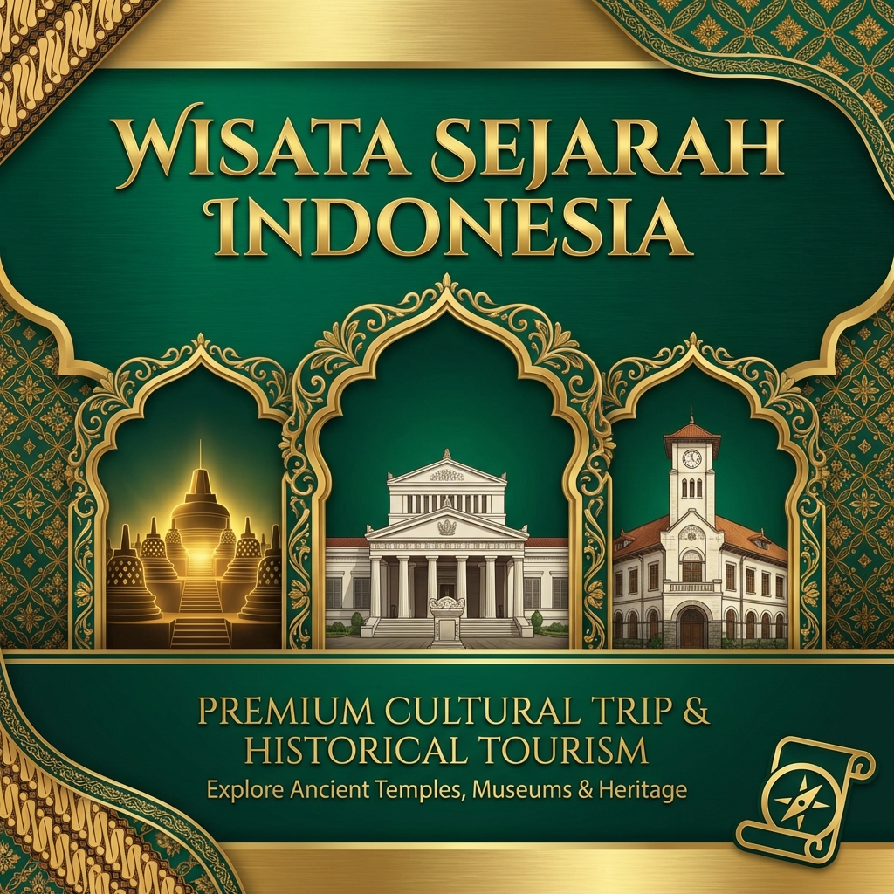

Pulau Jawa menyimpan kekayaan warisan budaya yang luar biasa dalam bentuk candi-candi bersejarah yang telah berdiri selama berabad-abad. Dari Candi Borobudur yang megah hingga Candi Prambanan yang elegan, setiap candi menyimpan cerita tentang kemegahan peradaban Nusantara di masa lalu. Wisata sejarah ke candi-candi ini bukan sekadar rekreasi, melainkan perjalanan edukatif yang memperkaya wawasan dan menumbuhkan rasa kebanggaan terhadap warisan budaya bangsa.
Gemilang Katun Outbound menghadirkan paket wisata sejarah yang menggabungkan edukasi mendalam dengan pengalaman wisata yang menyenangkan. Dengan pemandu ahli yang menguasai sejarah dan arkeologi, setiap kunjungan ke candi akan menjadi pengalaman belajar yang tak terlupakan bagi peserta dari segala usia.
Mengapa Wisata Sejarah Candi Penting untuk Edukasi?
Wisata sejarah ke candi memiliki nilai edukatif yang sangat tinggi dan tidak bisa didapatkan hanya dari membaca buku atau menonton dokumenter. Berdiri langsung di hadapan bangunan berusia ribuan tahun memberikan pengalaman sensorik yang mendalam — merasakan tekstur batu yang telah diukir dengan sangat detail, melihat langsung proporsi arsitektur yang mengagumkan, dan membayangkan kehidupan masyarakat pada era tersebut.
Untuk perusahaan, wisata sejarah menjadi alternatif program pengembangan karyawan yang unik. Karyawan tidak hanya mendapatkan hiburan, tetapi juga pembelajaran tentang kepemimpinan, perencanaan strategis, dan kerja sama tim dari kisah-kisah para raja dan kerajaan masa lampau. Hal ini memberikan perspektif baru yang dapat diaplikasikan dalam konteks bisnis modern.
"Mereka yang tidak mengenal sejarahnya, tidak akan mampu membangun masa depannya. Setiap batu di candi ini bercerita tentang kejayaan yang dibangun dengan kerja keras, visi, dan dedikasi." — Filosofi Wisata Sejarah, Gemilang Katun Outbound
Candi Borobudur — Mahakarya Abad ke-9
Candi Borobudur merupakan candi Buddha terbesar di dunia dan telah diakui sebagai Situs Warisan Dunia UNESCO sejak tahun 1991. Terletak di Magelang, Jawa Tengah, candi ini dibangun pada abad ke-9 oleh Dinasti Syailendra dan terdiri dari 10 tingkat dengan 72 stupa yang mengelilingi stupa utama di puncaknya.
Borobudur bukan sekadar bangunan megah — ia adalah "buku" terbuka yang menceritakan ajaran Buddha melalui lebih dari 2.672 panel relief yang diukir di dinding-dindingnya. Para pengunjung dapat membaca cerita ini dengan berjalan mengelilingi koridor dari bawah ke atas, sebuah perjalanan spiritual dari dunia duniawi menuju pencerahan.
Pengalaman yang Ditawarkan
- Sunrise tour: Menyaksikan matahari terbit dari puncak Borobudur dengan latar belakang Gunung Merapi — pengalaman spiritual yang memukau
- Guided heritage walk: Tur berpemandu yang menjelaskan makna setiap relief dan arsitektur candi secara mendalam
- Workshop batik: Aktivitas tambahan membuat batik dengan motif Borobudur
- Cycling tour: Berkeliling desa-desa sekitar Borobudur dengan sepeda untuk melihat kehidupan masyarakat lokal

Candi Prambanan — Keindahan Hindu Jawa
Candi Prambanan adalah kompleks candi Hindu terbesar di Asia Tenggara yang juga merupakan Situs Warisan Dunia UNESCO. Terletak di perbatasan Yogyakarta dan Jawa Tengah, candi ini dibangun pada abad ke-9 oleh Dinasti Sanjaya sebagai persembahan untuk Trimurti — Brahma, Wisnu, dan Siwa.
Candi utama yang didedikasikan untuk Dewa Siwa menjulang setinggi 47 meter, menjadikannya candi Hindu tertinggi di Indonesia. Di dalamnya terdapat arca Siwa Mahadewa yang megah serta relief yang menceritakan kisah Ramayana — epos Hindu yang terkenal tentang kesetiaan, keberanian, dan cinta.
Pertunjukan Ramayana Ballet
Setiap malam di musim kemarau (Mei-Oktober), pertunjukan Sendratari Ramayana digelar di panggung terbuka dengan latar belakang Candi Prambanan yang berkilau di bawah cahaya lampu. Pertunjukan tari kolosal yang melibatkan ratusan penari ini menceritakan kisah Ramayana secara dramatis dan memukau, menjadikannya pengalaman budaya yang wajib disaksikan saat berkunjung ke Prambanan.
Candi-Candi Tersembunyi yang Wajib Dikunjungi
Selain Borobudur dan Prambanan yang sudah terkenal di seluruh dunia, Jawa juga menyimpan banyak candi tersembunyi yang tak kalah menariknya. Candi-candi ini menawarkan pengalaman wisata yang lebih intim dan autentik karena belum terlalu ramai dikunjungi wisatawan.
Candi Sukuh — Mistis di Lereng Lawu
Candi Sukuh terletak di lereng Gunung Lawu pada ketinggian 910 meter. Yang membuatnya unik adalah arsitekturnya yang menyerupai piramida Maya dari Amerika Tengah — sangat berbeda dari candi-candi Jawa pada umumnya. Relief-reliefnya juga unik dengan tema yang berkaitan dengan pembebasan jiwa dan kesuburan manusia.
Candi Cetho — Ketenangan di Atas Awan
Tak jauh dari Candi Sukuh, Candi Cetho berdiri di ketinggian 1.496 meter, menjadikannya salah satu candi tertinggi di Jawa. Suasananya yang sering berkabut memberikan nuansa mistis yang luar biasa. Dari kompleks candi ini, pengunjung bisa menikmati panorama spektakuler dataran rendah Jawa yang membentang hingga ke cakrawala.
Baca Juga
Tips Wisata Sejarah ke Candi
Agar kunjungan ke candi-candi bersejarah menjadi pengalaman yang maksimal, berikut tips penting yang perlu diperhatikan. Pertama, datanglah sepagi mungkin untuk menghindari keramaian dan terik matahari. Waktu terbaik adalah saat sunrise atau pagi hari ketika cahaya matahari memberikan efek dramatis pada bangunan candi.
Kedua, gunakan jasa pemandu wisata yang bersertifikat dan berpengetahuan luas tentang sejarah candi. Tanpa pemandu, Anda hanya akan melihat batu-batu yang ditumpuk — dengan pemandu yang baik, setiap batu akan bercerita tentang kejayaan Nusantara masa lampau. Ketiga, hormati situs bersejarah dengan tidak memanjat bangunan, tidak menyentuh relief secara berlebihan, dan tidak meninggalkan sampah.
Paket Wisata Sejarah dari Gemilang Katun Outbound
Gemilang Katun Outbound menawarkan paket wisata sejarah yang komprehensif, mencakup transportasi nyaman, tiket masuk ke semua destinasi, guide berlisensi yang menguasai sejarah candi, konsumsi selama perjalanan, dan dokumentasi profesional. Paket kami dirancang untuk memberikan pengalaman edukatif yang mendalam sekaligus menyenangkan.
Kami juga menyediakan paket kombinasi wisata sejarah + outbound, di mana peserta bisa menikmati wisata candi di pagi hari dan kegiatan team building di sore hari. Kombinasi ini sangat populer untuk program study tour sekolah dan outing perusahaan yang ingin memberikan pengalaman lengkap kepada peserta — edukasi sejarah dan penguatan tim dalam satu paket.